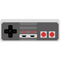

Authentic Look & Feel
NES Emulator for BlackBerry Playbook

Releases
- 1.1.0.0 r57 - New sound sync and buffers handling code. It may still randomly glitch a bit though.
- 1.0.1.0 r56 - First release that actually playable, that never gets to AppWorld
Info
This port is based on FCEUX 2.1.5 emulator. I decided not to use SDL for Playbook because it was software rendered at that time. And made it purely with OpenGL ES and OpenAL for sound. FCEUX is modified to be compiled as library for ease of use. I tried to make look and feel as much authentic to gamepad as possible so you will never see fullscreen feature probably. Anyway it's hard to fit 4:3 aspect ratio into 16:9 of Playbook without distortions or cropping.Part of gamepad design was taken from nes controller svg by Fant0men.
Just for the history, first finished game on Playbook was Banana Prince.
How to install
Download .bar file by clicking on that cute gamepad icon upper.Download Blackberry Command-line tools for Android Apps and unzip. It's a smallest tools package you can download to install .bar files, otherwise you need to download SDK.
Switch your Playbook to Development Mode to upload .bar files to it.
For Linux, Ubuntu, etc:
Open terminal, change current directory to blackberry.tools.SDK/bin then use blackberry-deploy with password (which you set when turn on Development mode) and ip from Playbook and path to downloaded .bar file.For example:
./blackberry-deploy -installApp -launchApp -password 12345 -device 192.168.1.10 -package ~/Desktop/nes_arm-1_1_0_0.barOutput should look like this:
For Windows:
Unpack tools to Desktop. Put .bar file into CommandLineTools_1.5.2\blackberry.tools.SDK\bin.Open command line by using Win+R combination then type "cmd" without quotes and click OK.
In command line type "cd Desktop\CommandLineTools_1.5.2\blackberry.tools.SDK\bin" without quotes and push Enter.
Then type "blackberry-deploy.bat -installApp -password 12345 -device 192.168.77.32 -package nes_arm-1_ 1_0_0.bar" without quotes and substitute your own Playbook password and ip address.
Done, result should look like this:

ROMs
FCEUX code base make possible to play almost all games available even awful pirated Chinese ports.Put ROMs into media/misc/NES folder onto your Playbook.
Emulator does not sort files for you, so first uploaded roms shown first.
Play
D-Pad up/down is controlling menu cursor. Touch A to select menu item or rom file. Touch B to go back. Hold up/down to scroll through menu faster.Swipe from top bezel to screen (Playbook menu gesture) to pause emulator and show menu.
Feature
On top of thing to be done is saves support of course. I was thinking to add a couple of quicksave slots.Multiplayer maybe, not sure how it works yet. More mappers. Cheats, etc.
Developer
Anton Veretenenko
Screenshots
These screenshots are taken by emulator itself, not by that ugly Playbook built-in screenshot maker. That's why they look so good =)